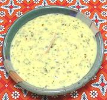

|
White Lemon SaucePoland - Sos Bialy Cytrynowy | ||||
| Makes: Effort: Sched: DoAhead: |
1-1/3 cups ** 45 min Part |
This delicious sauce is served with chicken, fish, omelets, sweetbreads and other medium flavored dishes. See our Double Boiler / Bain Marie page for appropriate tools. | |||
|
3 1 1 1-1/2 1 1 1 1 1/2 1/4 2 1/2 |
oz T t T T T T c t t T |
Mushrooms (1) Butter Lemon Zest Lemon Juice Parsley, flat Flour Butter Stock (2) Salt Pepper Egg Yolks Butter |
This sauce is much like a Greek lemon sauce, not surprising since Poland was a major trade corridor with Greece for hundreds of years. It is generally finished with Egg Yolks just before serving. Prep - (20 min)
|